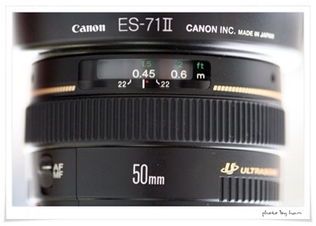
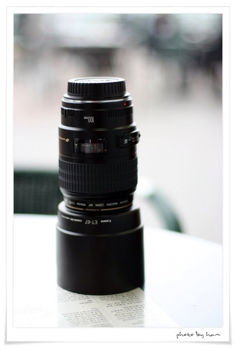
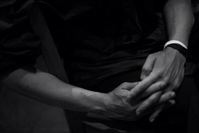
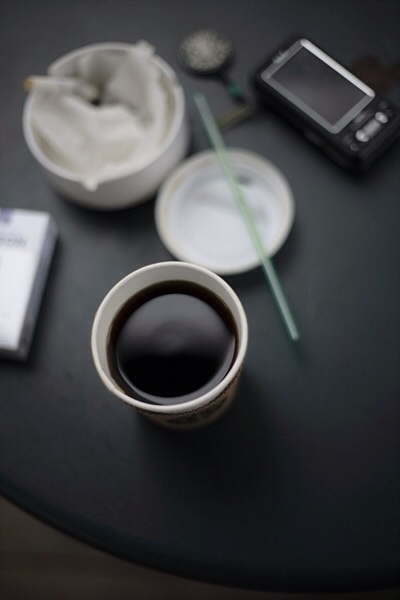
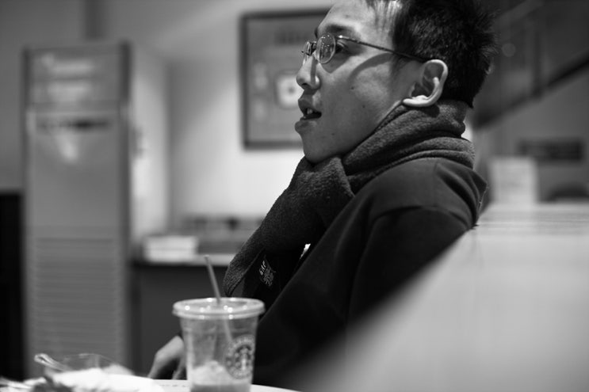
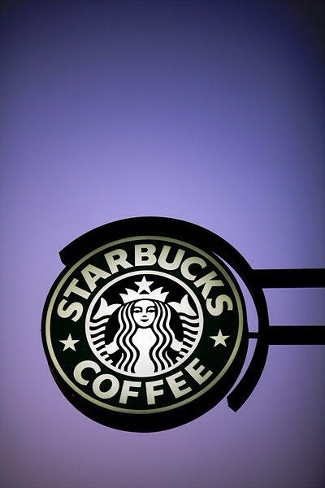
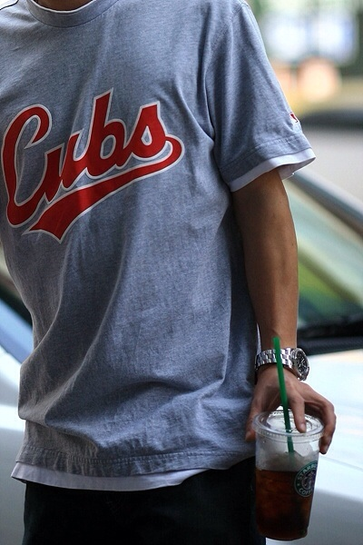
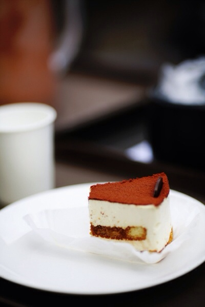
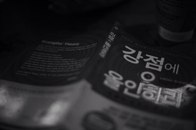

두려움
잘 못 찍을까 봐 카메라를 들기 전에 오래 망설였다.
Before the shot
손이 멈추던 시간
손이 멈추던 시간
카메라별 · LPH-B613-09 · HAM MEDIA 별자리
앵글에 넣는 것보다,
무엇을 빼고 찍어도 내 이야기를 전달할지
고르는 순간이 중요했다.

두려움이 먼저 있었고, 그다음에는 많이 찍었다. 남길 한 장을 고르는 눈은 실패한 프레임까지 다시 보는 동안 조금씩 생겼다.
잘 못 찍을까 봐 카메라를 들기 전에 오래 망설였다.
잘 찍을 때까지 기다리지 않고, 일단 들고 나가 여러 장을 남겼다.
무엇을 더 넣을지보다, 무엇을 빼야 이야기가 남는지 보기 시작했다.
같은 크기의 카드에 사진을 밀어 넣지 않았다. 가로 사진은 가로로, 세로 사진은 세로로 읽히게 두고 한 번에 한 장씩 선택한다.

SELECTED 01 / 05
카메라만 보여주지 않고, 그 카메라를 든 사람까지 한 장에 남겼다.
문장은 두려움에서 시작하고, 장면은 대표 다섯 장 뒤의 전체 기록을 연다. 디자인은 색 이름을 설명하지 않고 초점·선택선·덜어내기가 실제로 어떻게 쓰였는지 보여준다.
첫 흐름은 다섯 장으로 편집했지만, 공개 승인을 받은 39장의 원본 비율과 기억은 장면 문에 그대로 보존했다. 낮은 해상도는 원본보다 키우지 않는다.
39
골라낸 결과만 보여주는 대신, 다시 보고 비교하며 눈을 길러온 전체 기록을 연다. 각 사진은 원본 크기와 공개 여부를 확인한 장면이다.
이 별은 잘 찍는 사람의 자랑이 아니다. 잘 못할까 봐 미루던 사람이 결국 카메라를 들고, 많이 찍고, 다시 보며 눈을 길러온 이야기다.
검은 벽은 사진을 받치고, 초록 신호는 현재 선택만 가리킨다. 가로와 세로 사진을 같은 상자에 자르지 않고 원본 비율로 읽으며, 동작이 줄어들어도 선택된 장면과 문장은 남는다.
잘할 때까지 기다리지 않고 우선 장면을 남긴다.
한 번 찍은 사진을 지나치지 않고 무엇이 남았는지 살핀다.
색과 장식과 문장을 줄여 한 장의 이유가 흐려지지 않게 한다.
선택된 장면을 HAM MEDIA가 지금 하는 편집의 태도와 연결한다.
무서웠지만 들었다.
많이 찍었다.
그래서 조금씩 고르는 눈이 생겼다.
HAM MEDIA의 편집도 여기에 닿아 있다. 더 많이 붙이는 일이 아니라, 결국 무엇을 남길지 정하는 일. 카메라별은 그 눈이 어디서 시작됐는지 보여준다.
좋아해서 오래 바라본 것들은 서로 다른 별이 된다. 카메라별에서 눈을 길렀다면, 다음 별에서는 또 다른 감각의 시간을 만날 수 있다.
카메라별 · 문장

카메라 · 시작 · 유튜브

카메라별 · 장면
카메라와 시선의 좌표












카메라별 · 디자인
검정은 사진을 받치는 벽, 초록은 현재 선택, 빨강은 한 번의 정밀한 표시다. 원본 비율을 지키고 주변을 덜어내 한 장을 고른 이유가 먼저 보이게 했다.